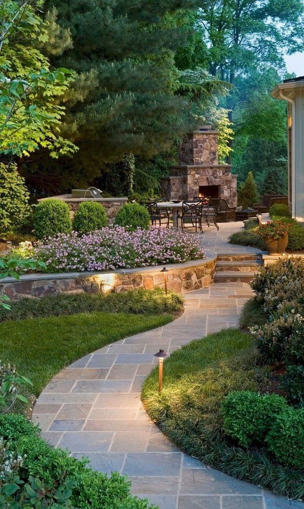
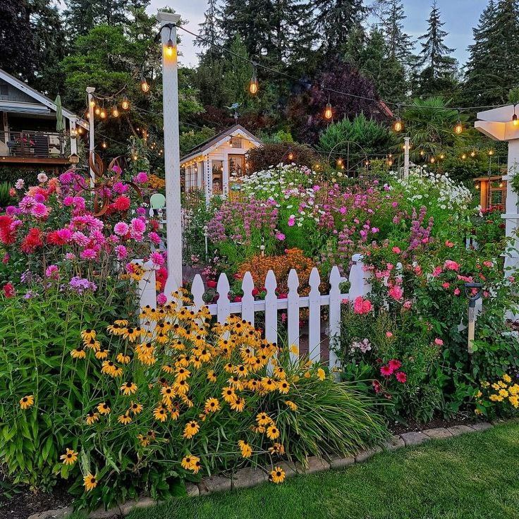

GARDEN IDEAS & DESIGN INSPIRATION
From our garden to yours, we share garden design ideas from around the world for beautiful gardens big and small

landscape design
Garden landscaping is the measured manipulation of the grounds around a property. This can involve changes in terrain and surfaces, erection of structures and careful planting

small garden
Small gardens can make a big impact. With some clever planning, you can transform the most compact outdoor space into something really special. You can even make it seem like you have more space than you actually do.

shade garden
Shade gardens are a type of garden planted and grown in areas with little or no direct sunlight. Shade gardens may occur naturally or by design under trees, as well as on the side of buildings or fences.

Front yard landscaping
add value to your home by increasing curb appeal with attractive, functional front yard landscaping ideas. Opt for traditional front yard landscaping such as foundation shrubs, add a more modern architectural look with specimen plants, or choose a breezy cottage plan.

side yard landscaping
A side yard is primarily seen as a route between the front and back yards. The area tends to be dark and narrow and present unique design challenges, so the potential to create an attractive and functional space is often missed.

Vegetable garden
Vegetable gardening is becoming more popular—both as a pastime and a food source. We experience satisfaction in planting a seed or transplant, watching it grow to maturity, and harvesting the fruits of our labors.

Bee-friendly garden
Choose plants that attract bees – Bees love native wildflowers, flowering herbs, berries and many flowering fruits and vegetables.

Flower garden
A flower garden or floral garden is any garden or part of a garden where plants that flower are grown and displayed.

Rock garden
A rock garden, also known as a rockery and formerly as a rockwork, is a garden, or more often a part of a garden, with a landscaping framework of rocks, stones, and gravel, with planting appropriate to this setting.

Garden room
arden room is a secluded and partly enclosed space within a garden that creates a room-like effect.

landscape lighting
Landscape lighting or garden lighting refers to the use of outdoor illumination of private gardens and public landscapes; for the enhancement and purposes of safety, nighttime aesthetics, accessibility, security, recreation and sports, and social and event uses.

Garden pathway
Pathways are an often-overlooked aspect of an outdoor space, but are an essential part of any garden design.